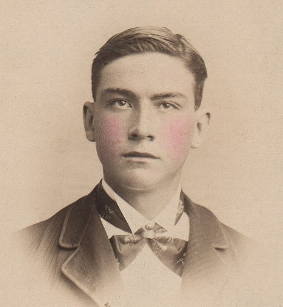

From one generation to the next
Between 2000 and 2010, Nicole Charette told the family's story in about twenty small websites. This site takes their content, in French and English, and puts it back in chronological order, period by period. Every event links back to the original page it comes from.
Nothing is invented or corrected: when two pages give different dates, both are shown with the label Sources differ. The original sites are still available as they were (list of the original sites).
The periods
- c. 1613–1700Beginnings in New France Robert Caron arrives in Québec in 1634; Mathieu Choret, the first Charette, settles near Beauport in 1647 with Sébastienne Veillon. First land, first weddings, first threats of war.Open this period →
- 1700–1800The 18th century Pierre Choret leaves Beauport for the island of Montreal; his sons marry two Lemay sisters at Sault-au-Récollet. In 1759 the Conquest makes the colony a British possession.Open this period →
- 1800–1890The 19th century From Saint-Laurent to Saint-Jérôme, then Saint-Henri: the War of 1812, the rebellions of 1837–1838 and the family's arrival on rue Saint-Antoine. Meanwhile the Côtés, Pageaus, Consignys, Gagnons and Dionnes marry in Québec City and the lower St. Lawrence.Open this period →
- 1890–1950Two families, two wars The Charette, Caron, Côté and Consigny families, from Saint-Henri to Maisonneuve: two wars, two weddings in 1917 and 1919, and a third, in 1946, that brings them together.Open this period →
- 1950–2005The post-war years The last years of Marie-Anna and Ézilda, Gérard and Jacqueline's family, then Nicole's websites. Out of respect for privacy, the recent generations are only mentioned in passing.Open this period →
People
c. 1613–1700 — Beginnings in New France
- Robert Caron1613?–1656
- Mathieu Choret?–1664
- Sébastienne Veillon1616/1626–1698
- Pierre Choret the younger1662–1736
1700–1800 — The 18th century
- Pierre Choret1690–1749
- Joseph Choret1719–1792
- Jean-Baptiste Chauret1749–1798
- The Sanfaçon dit Consigny family1735–1907
1800–1890 — The 19th century
- Jacques Charette (1781)1781–1869
- Jacques Charette (1813)1813–1897
- Alphonse Charette Sr.1850–1919

Alphonse Charette Jr.1874–1916- Alphonsine Gagnon1869–1929
 Gaudias Côté and Georgiana Pageau1863–1951
Gaudias Côté and Georgiana Pageau1863–1951